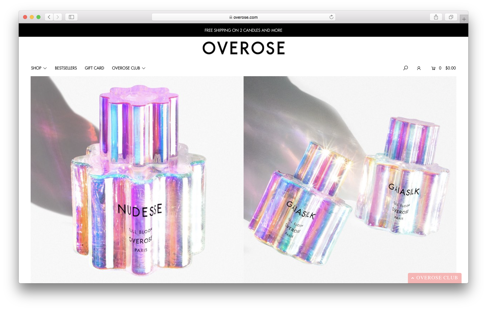
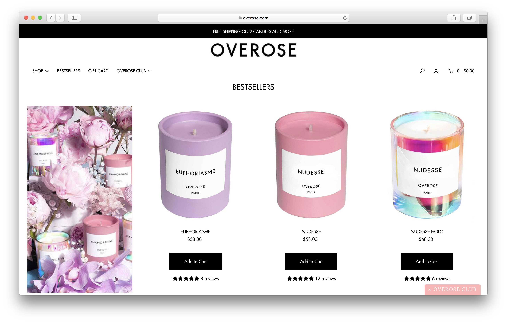
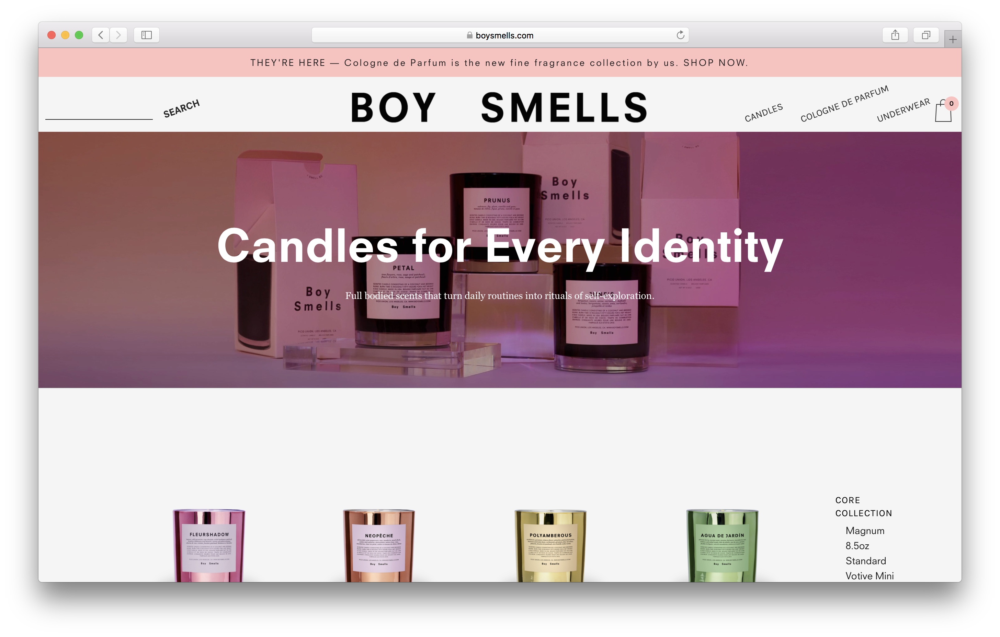
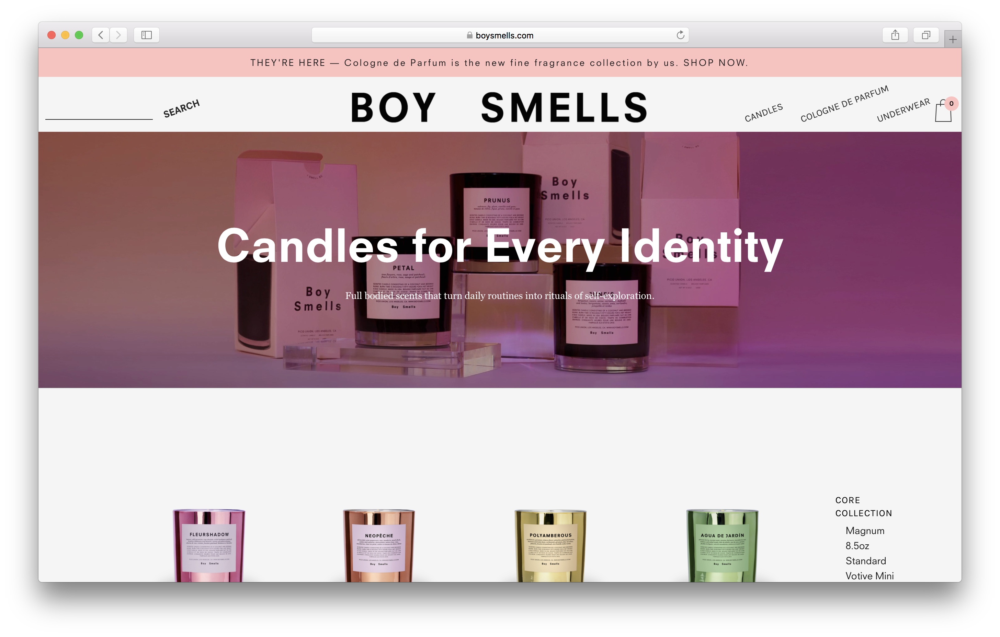
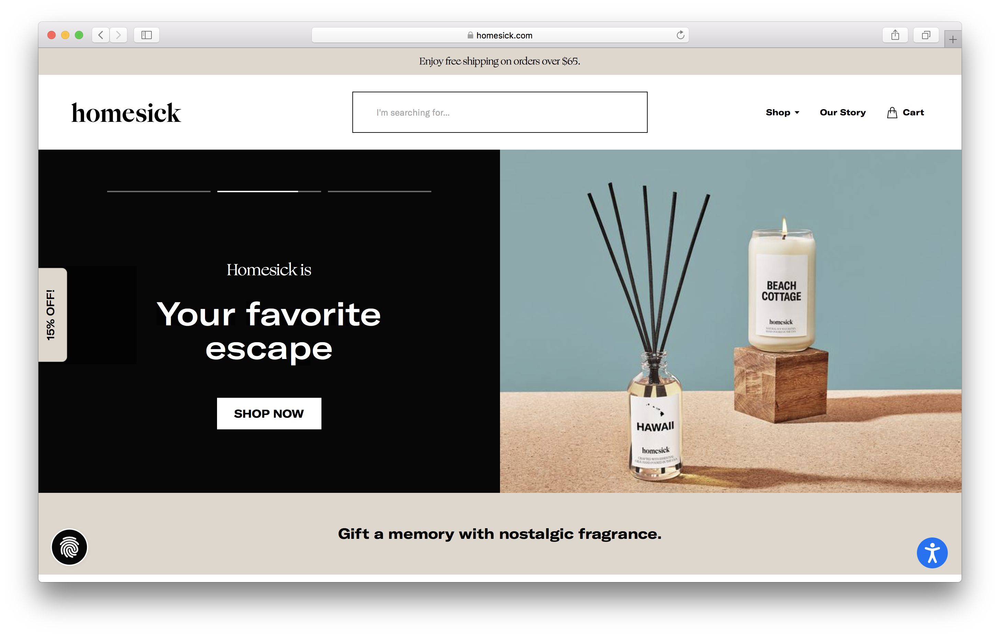
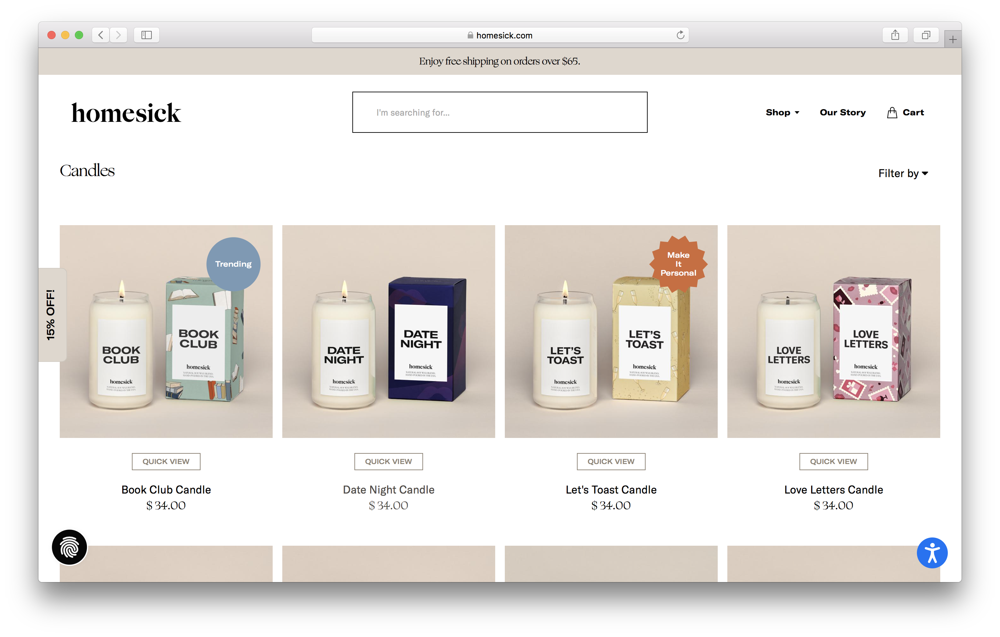

Final project proposal
Introduction
Glow Candles
Glow Candles is a fictitious candle shop that sells hand-poured candles made locally in San Luis Obispo. Our candles are made of a natural soy wax blend, 100% organic cotton wicks, and high quality fragrance oils to deliver a long-lasting, great-smelling burn. Our candles are also cruelty-free, non-toxic and contain no lead, plastics, paraben, phthalates or synthetic dyes.
Target audience
Our target audience in terms of age/generations are millennials and gen Z’s who appreciate a modern and trendy aesthetic. Our candles not only smell great, but also feature a beautiful and clean packaging design that will spruce up any environment. We cater to candle and home decor lovers who appreciate high quality products that are made sustainability and locally.
Our target audience’s goals are to utilize the website to learn about how Glow Candles are produced and to also discover the different scents available in store.
Comparative analysis
OverRose
 Boy Smells
 

homesick
 Website content
Home
At Glow Candles we create hand-poured candles made locally in San Luis Obispo. Our candles are made of a natural soy wax blend, 100% organic cotton wicks, and high quality fragrance oils to deliver a long-lasting, great-smelling burn. Our candles are also cruelty-free, non-toxic and contain no lead, plastics, paraben, phthalates or synthetic dyes.
[Glow Candles Shop exterior.]
Products
Explore our different scents.
[Citron Blossom Cassis Candle.]
[Beachwood Vetiver Candle.]
[Peony and Blush Suede Candle.]
[Wood Sage and Sea Salt Candle.]
[English Pear and Freesia Candle.]
About
Glow Candles was founded in 2021 by Ashley Hiraoka with a focus of creating high-quality, beautiful candles that will add aesthetically to any environment. Each candle is hand poured and labeled in San Luis Obispo and made with natural ingredients, ensuring a long-lasting, great-smelling burn. Our candles are perfect for gift giving, or as a stunning addition to your own home.
[Candles being poured.]
Contact
Come visit us!
- 1234 Higuera Street, San Luis Obispo, CA 93405
- 805.789.9087
- glowcandles@gmail.com
[Google maps screenshot of location]